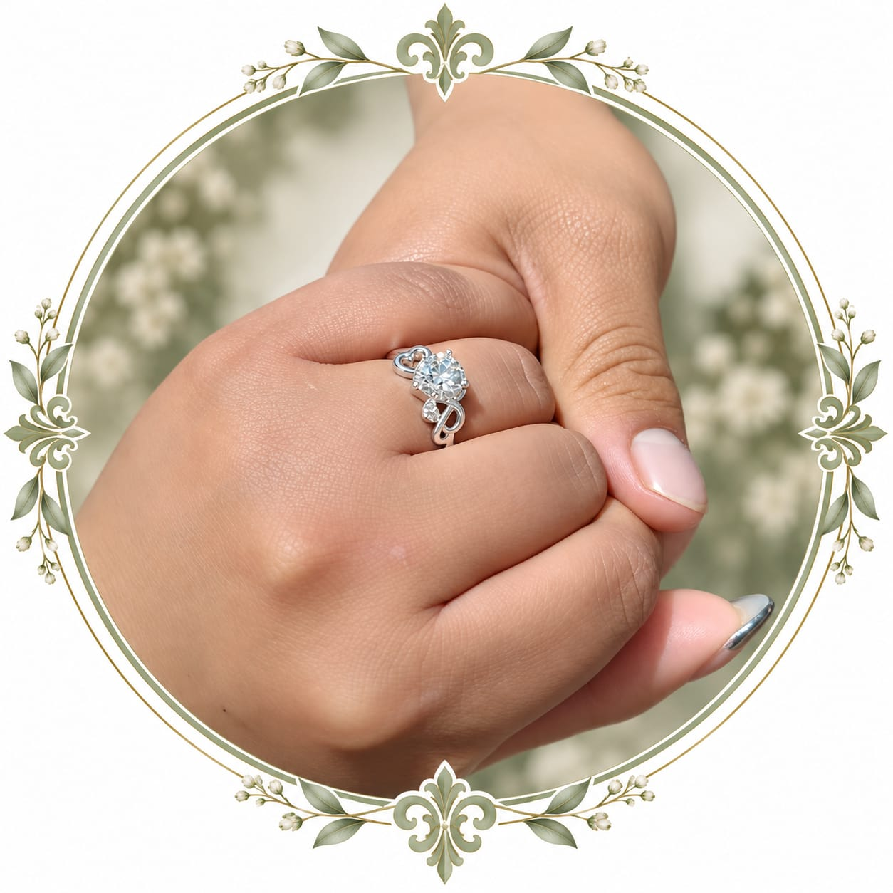
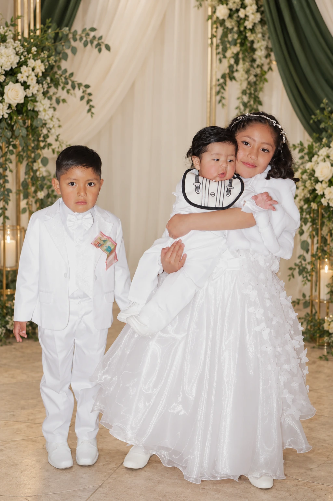

Nos damos el sí
Iglesia de Nuestra Señora de la Inmaculada Concepción de Laja
Plaza principal · Laja
Ver ubicación de la iglesia ↗EL VIAJE MÁS BONITO ESTÁ POR COMENZAR
Toca el pasaporte para abrir
♫ Enciende el sonido y acompáñanos
DOS HISTORIAS · UN MISMO DESTINO
¡Nos casamos!
Elegimos caminar juntos.
Hoy queremos que seas parte
de nuestro próximo destino.
01 / NUESTRO DESTINO

“El amor nunca se da por vencido, jamás pierde la fe, siempre tiene esperanzas y se mantiene firme en toda circunstancia.”1 Corintios 13:7
Con la bendición de Dios y el cariño de nuestra familia, comenzamos una nueva etapa. Nos hará muy felices compartir contigo este día que guardaremos para siempre.
02 / NUESTROS COMPAÑEROS DE VIDA

NUESTRANuestros hijos son la parte más hermosa de nuestra historia. Con ellos, cada día es una aventura y cada abrazo, nuestro lugar en el mundo.
Juan Carlos Mamani Kahuasa †
Antonia Sánchez de Mamani
María Eugenia Ayma Yampasi
03 / QUIENES NOS ACOMPAÑAN
Andrés Choque Jillapa
Mónica Chávez de Choque
Cecilia Alacama
Castro Aira Alaca
Rita Paco de Aira
Gracias por acompañarnos
en este viaje de amor.
04 / TU PASE A UN DÍA INOLVIDABLE
Luis & Ariana
Cada vez más cerca del gran día
05 / LAS PARADAS DE NUESTRO VIAJE
Puedes llegar antes de las 10:00 a. m. para acompañarnos y compartir la sesión de fotos.
Iglesia de Nuestra Señora de la Inmaculada Concepción de Laja
Plaza principal · Laja
Ver ubicación de la iglesia ↗Salón de Eventos
100×100 Bolivia
Zona Villa Tunari, a una cuadra del puente Río Seco. Av. Juan Pablo II, frente a la Terminal Interprovincial · El Alto.
Buscar el salón en Maps ↗El primer baile de una vida juntos.
Una cena para brindar por el amor.
La torta y el tradicional lanzamiento del ramo.
06 / LA MÚSICA DE NUESTRA CELEBRACIÓN
Fiesta principal · Sábado 24 de octubre
Nos acompañarán Histeria, Zamir, Company y las Chicas Infieles:
07 / EL VIAJE CONTINÚA
Con la música de Zamir Escobar y los Patrones del Sabor y la banda Espectacular Proyecto Bolivia.
Con el mismo cariño, te invitamos al tradicional conteo de regalos en el Salón de Eventos 100×100 Bolivia.
Tu compañía hace más especial
cada momento de esta historia.
08 / CONFIRMA TU LUGAR EN ESTE VIAJE
Estamos preparando este día con mucha ilusión. Confirma tu asistencia para celebrar juntos el comienzo de nuestra nueva etapa.
Confirmar asistencia por WhatsApp ♡El contacto de confirmación se añadirá próximamente.
Hay viajes que cambian la vida.
El nuestro será aún más bonito contigo.